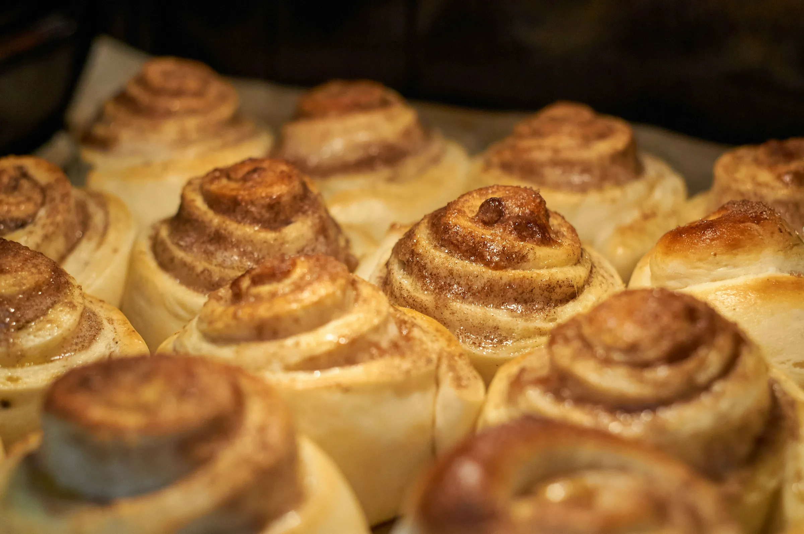
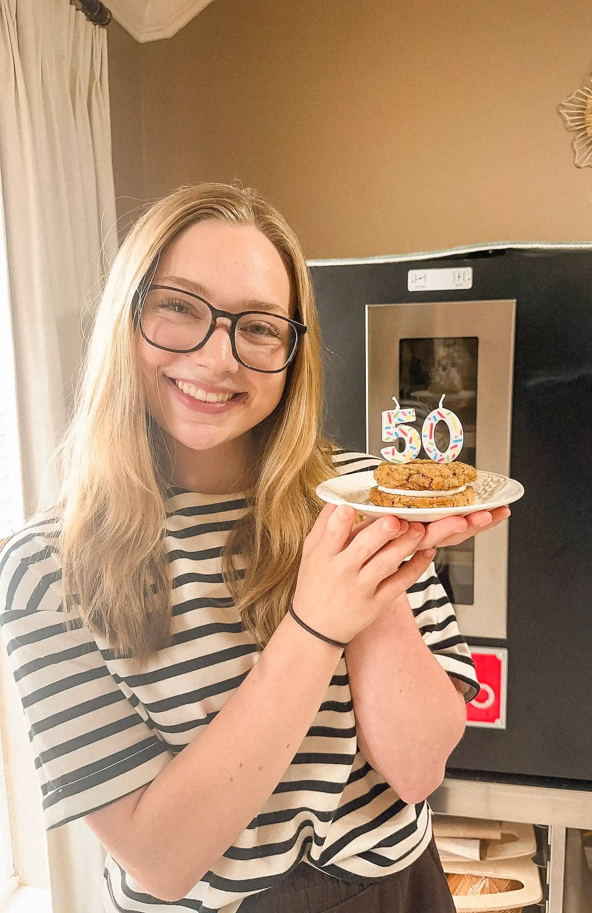
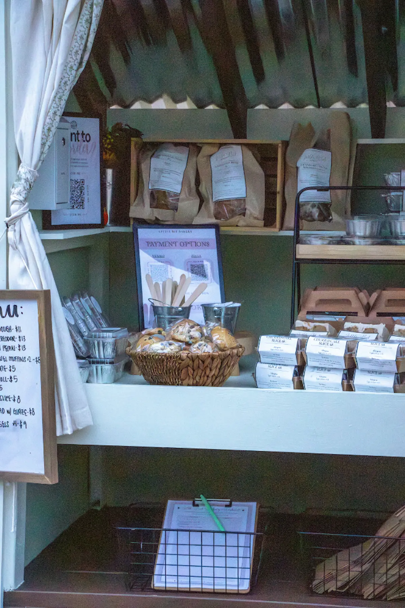
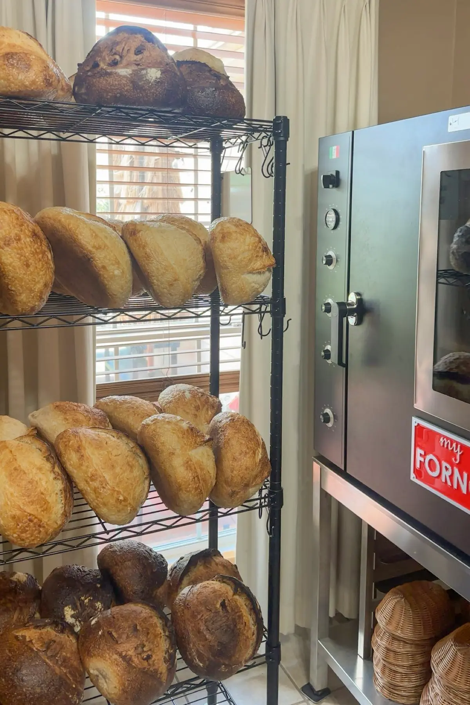
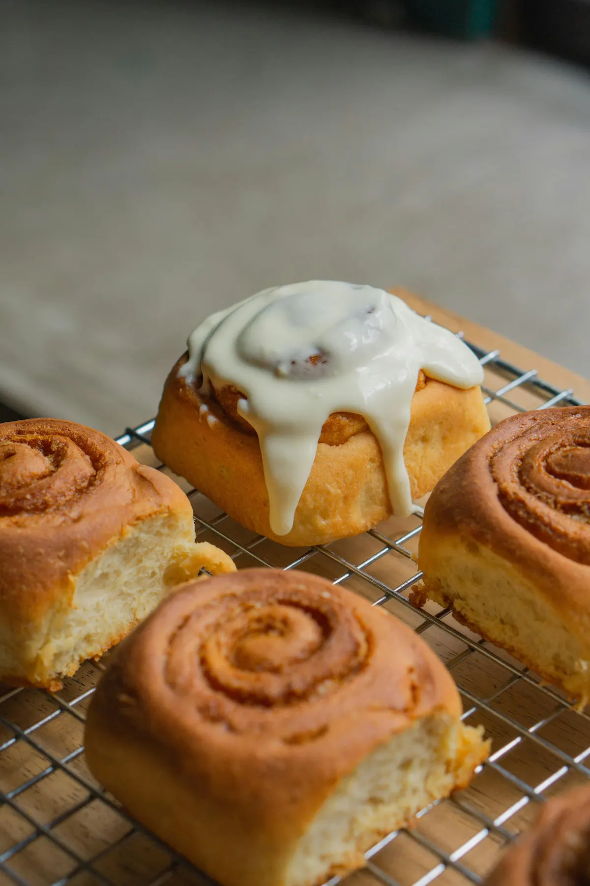
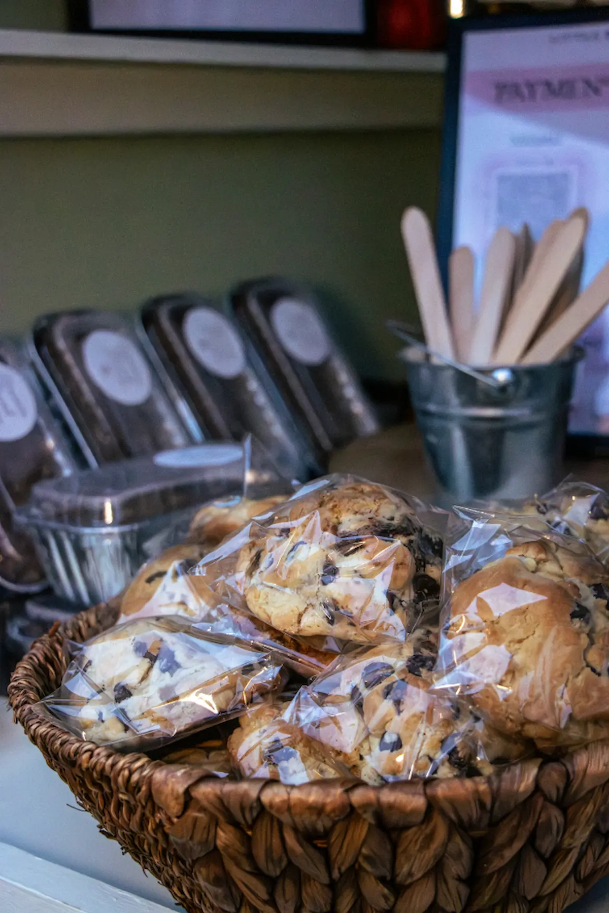
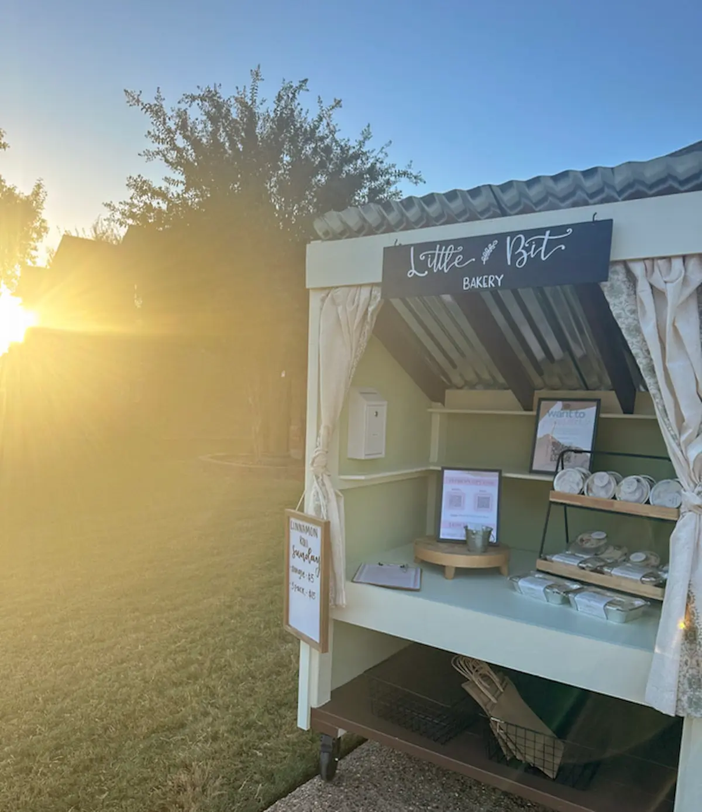
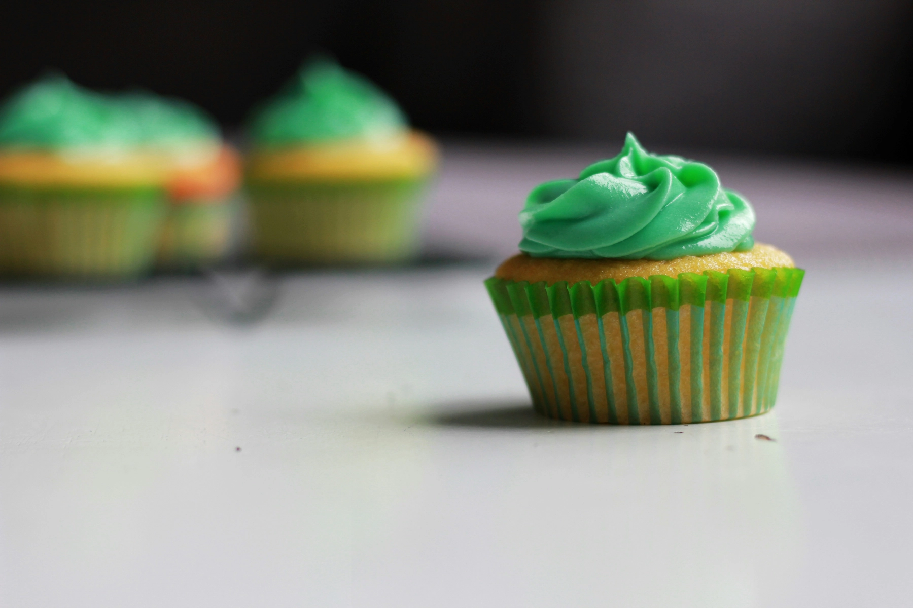
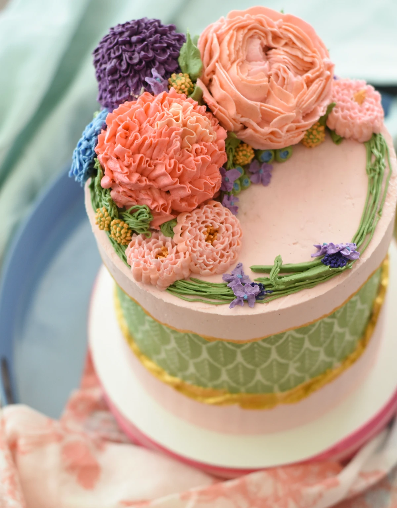

I get to do this. I don't take a single Saturday for granted.
Thank you for letting a little porch bakery be part of your week, for showing up early, for the kind words, for all of it.
All glory to Christ
Every Sunday I share what I'm baking on socials and the Hotplate store, so you know what'll be on the porch come Saturday.
Orders go live Sunday at 5pm and tend to sell out fast. The sourdough and the cinnamon rolls go first, all baked to order, a little bit at a time.
The porch opens at 8 AM. Preordered bags are labeled and set out, ready to grab and go. No order? Come by and grab what's left while it lasts.
Most Saturdays it's sold out well before nine. When the last loaf leaves the porch, the week is done, and I start again.
A little note every Sunday when the new menu goes up, so you're first to the porch.
Join the list →I always wanted to bake but never had the chance to go all in. When the pandemic hit in 2020, I finally had my excuse. I started having fun, so I got a little starter baking set, and just… never stopped.
In September 2025 I opened the porch bakery, hoping to share what I make with more people around me. With the sweetest community it's grown into so much more than I could have ever dreamed of.
So now every Saturday at 8am the porch opens, stocked with breads, pastries, and treats. It's here to bring a little community together, and hopefully make your day a little bit better (:

In the kitchenShots from the porch and inside the Little Bit kitchen.





It's been a wild year. I got to share what I do on the Kelly Clarkson Show and on local DFW news, while the porch line just keeps getting longer. Still a little surreal. I'm just grateful y'all keep coming back.
In March 2026, I joined The Kelly Clarkson Show's "What I Like" segment, where Kelly surprised me with a donation toward a professional bread oven. I'm not too proud to say I teared up. It still doesn't feel quite real.

Custom orders are paused while I focus on the weekly drops, but the door isn't closed. If you've got a wedding, a birthday, or a quiet Tuesday that needs cake, leave your details and I'll be in touch the moment bookings reopen.

This product was produced in a private residence that is not subject to governmental licensing or inspection. Made and sold under the Texas Cottage Food Production Operations Act (Texas Health and Safety Code §437).